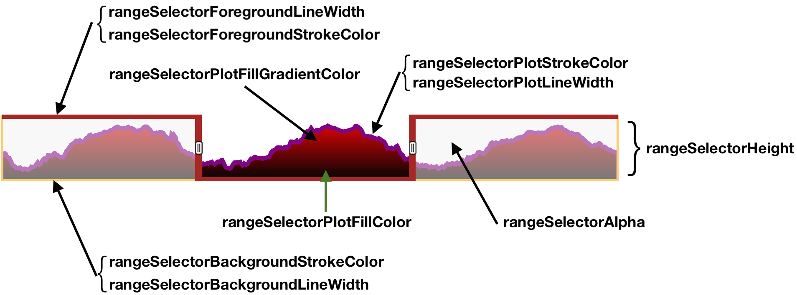

Demo of a graph with the range selector.
No roll period.
Here's a view of how the various range selector options affect the display:
Roll period of 14 timesteps, various custom range selector options.
Use the average of a specific subset of series to draw the mini plot (only the first series is used in this test). The default behaviour is to compute the average of all series.
Demo of range selecor without the chart. (interesting if multiple charts should be synced with one range selector).
Demo of range selector on dark background, with (left) and without (right) custom range selector gradient color.
Demo of range selector with stepPlot